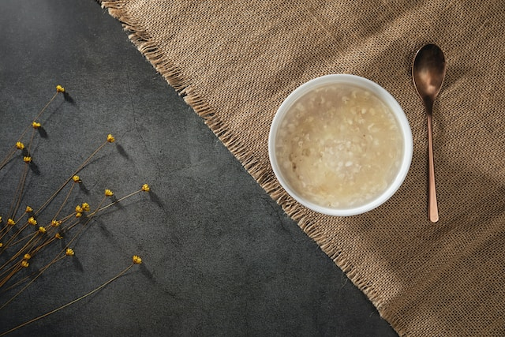

The Boring Breakfast

The Boring Breakfast
Are you chasing the breakfast of ultimate simplicity?
Look no further! The boring porridge is for you.
Enjoy the unexciting taste of ordinary oats with basic banana...
Ingredients
- 100 gr rolled oats
- 1 medium sized banana
- Some hot water
Steps
- Boil some water in the kettle.
- Mash a banana in a bowl with a fork, then
pour the rolled oats over the banana mash.
- Pour the hot water into the bowl.
- Mix everything until the desired consistency is reached.